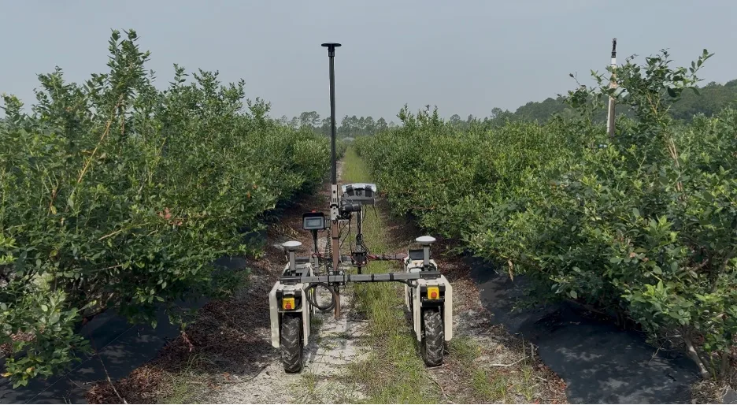
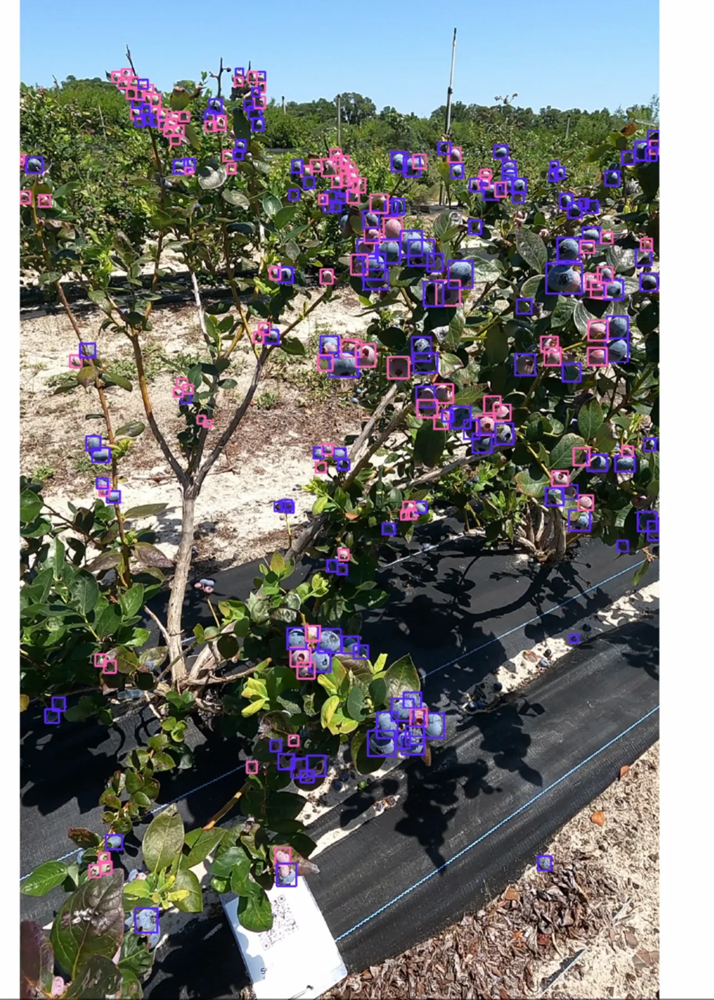
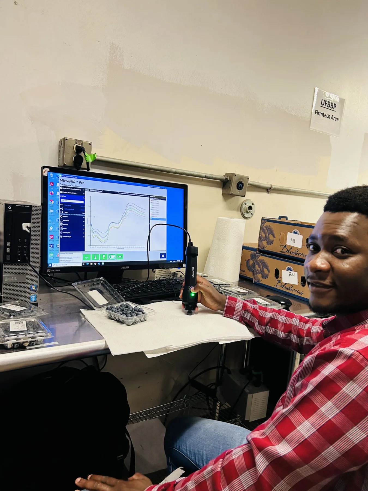

Plant breeding · phenomics · digital agriculture
Paul Motunrayo Adunola, Ph.D.
Phenomics & Digital Breeding Team Leader
Blueberry Breeding & Genomics Lab · University of Florida
I develop data-driven breeding systems that connect field phenotyping, genomics, environmental information, computer vision, and robotics to improve selection decisions and accelerate cultivar development.



About
Breeding decisions informed by better phenotyping.
I am a plant breeder and Research Assistant Scientist at the University of Florida, where I lead the Phenomics & Digital Breeding Team in the Blueberry Breeding & Genomics Lab. My work connects field breeding with phenomics, quantitative genetics, computer vision, robotics, genomics, and environmental prediction.
Latest
What I am working on now.
Featured research
Research built around practical breeding decisions.
{kind=link}
Selected publications
Research across breeding, phenomics, genomics, and prediction.
The full publication page is searchable and can be updated by adding a single entry to
data/publications.js.
Service
Edu-Kids Foundation
Supporting access to education and student welfare in Nigeria.
Contact
Interested in breeding, phenomics, or digital agriculture?
I am interested in research collaborations that connect new technology with practical plant breeding problems.
University of Florida · Gainesville, Florida, USA